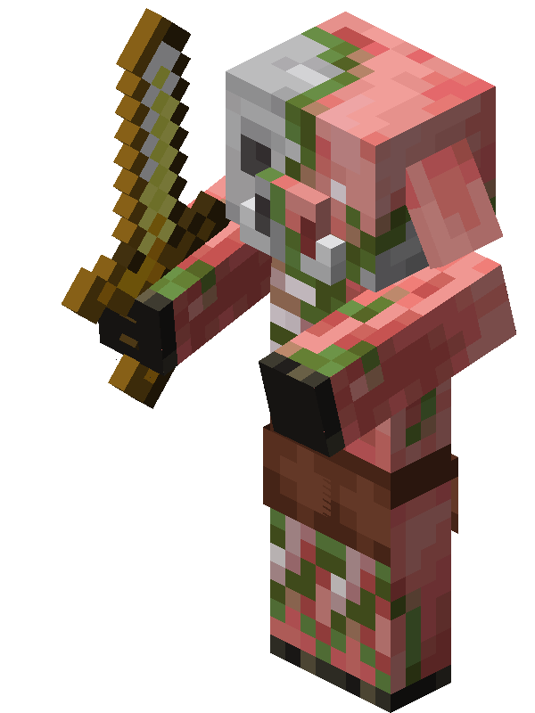
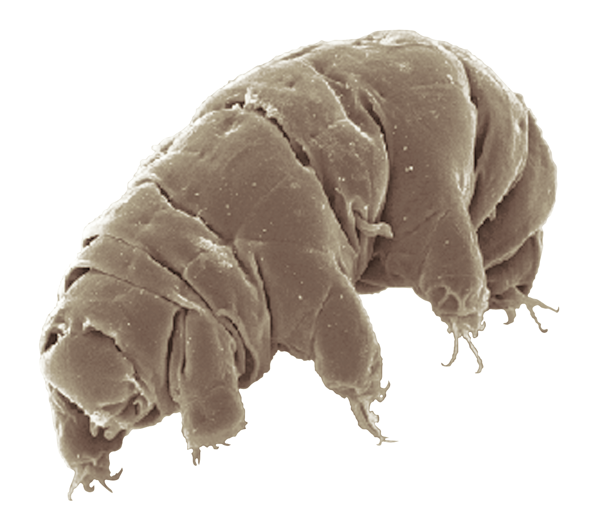

Delicious Stewed Beefman!


A delicacy from the jungles of Manitopia
Beefman is a crossbreed of the homo erectus species of human and modern day cows. They are found ~460ft below
sea level in the molten core of the underground Manitopian jungle. Although its name suggests it to be
of male gender, beefmen are hermaphroditic and undergo external meiosis in order to reproduce. It
speaks 46 different human languages, although their serrated vocal cords make it difficult for them to
enunciate vowels. Most of their speech is spoken through consonantial grunts and high pitched
squealings. They feed on the rotting cadavers of lost human travelers and inhabit a cross-dimensional
plane which makes them visible only to homo sapiens and cows (female). They have the ability to
shapeshift into tardigrades for the purpose of outer space travel. Their heads also make one heck of a
stew!
Ingredients
- One beefman (preferably alive)
- Tangible soul of a virgin female (aged 28-72 years)
- Cilantro
- Birdfeed
- Minced garlic
- Tap water
- Prosciutto
- Oyster Sauce
The process
- Capture a beefman and keep it tied up in a dimly lit, enclosed space
- Interrogate the beefman and force it to divulge its deepest and most embarassing secrets (more shame
= more flavor!)
- Stuff the beefman's nose with cilantro
- Fill a cartoonish giant pot with tap water
- Submerge the beefman in the water
- Find a virgin female between the ages of 28 and 72 and buy her whatever she wants at any convenience
store. I like to take her to
- /11
- Bring her to the beefman and before she can scream, blast her with your split-lambda powered tesla
cannon.
- Convert the essence of her soul into tangible form via any soulshaping device (I like to use the
Kirkland brand from Costco!)
- Cover the beefman's face with oyster sauce. Repeat until its face is well glazed.
- Quickly jam the now material soul into the heart of the beefman. If you're fast enough, the beefman
will be kept alive by the natural clotting of willpower!
- Recite your favorite verse from the Manitopian Hamlet. Repeat until the beefman pleads for you to
stop. If you accidentally killed the beefman in the last step, move onto step 13.
- Fill the pot with a pound each of minced garlic and birdfeed.
- Cook about a half pound of prosciutto in a saucepan until it starts to brown and then add it to the
pot.
- Boil the water. If you've done the previous steps correctly, the beefman will be kept alive by the
soul throughout the entire process.
- Once you are satisfied with the beefman's suffering, you can start dining on its face while it still
screams. Its visceral expressions of terror will give you quite the appetite! Enjoy!